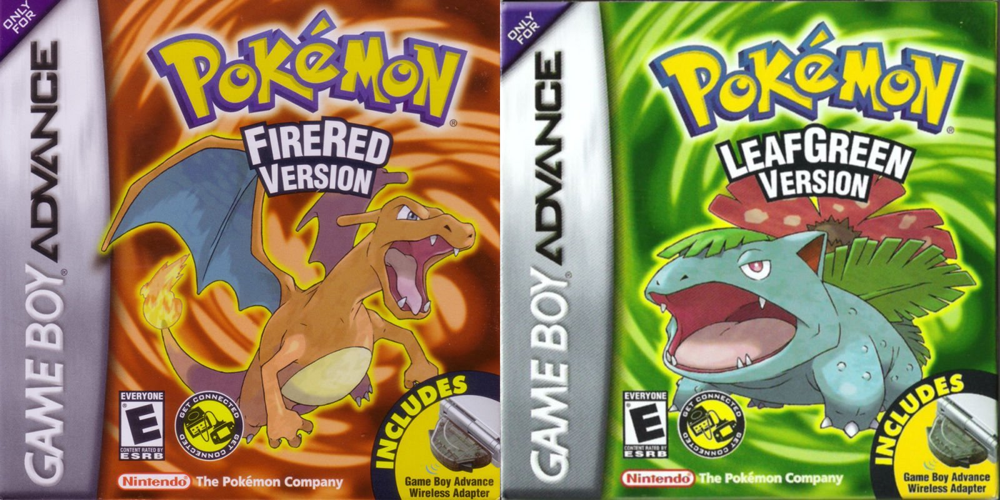
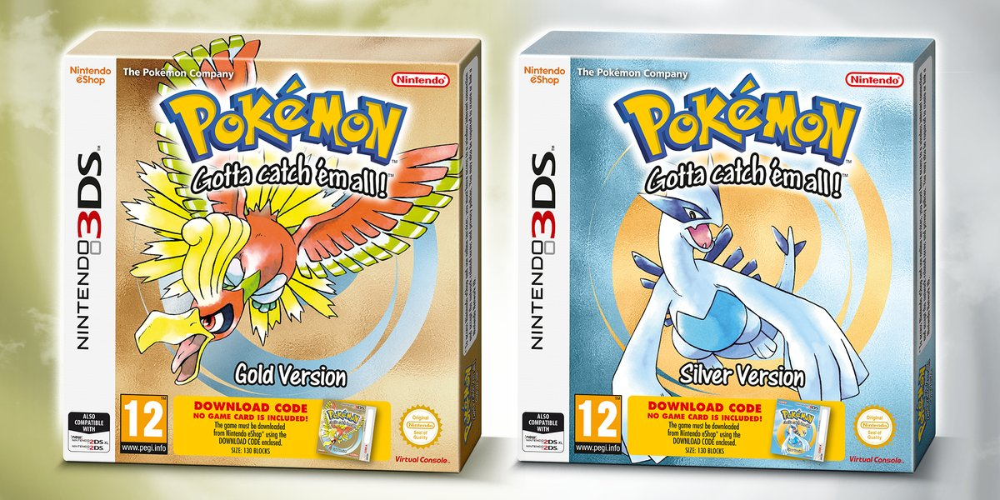
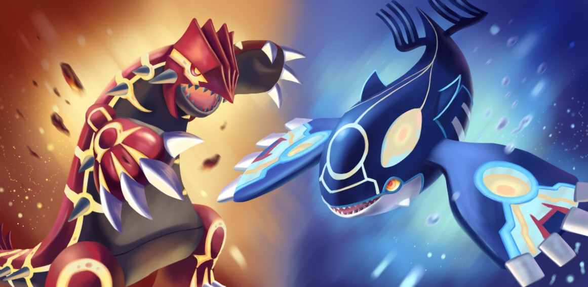
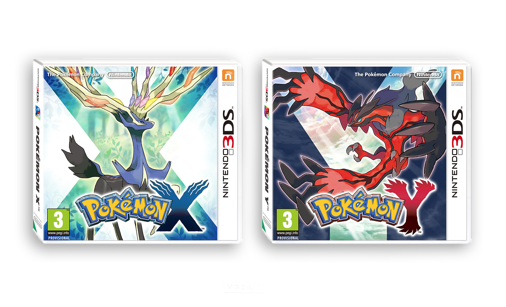

1.
Pokemon Rosso Fuoco / Verde Foglia
Voto: 9/10
L'aggiornamento dei giochi originali, Pokemon Rosso Fuoco e Verde Foglia, ha introdotto una nuova generazione di giocatori di Pokemon alla regione di Kanto. Con nuove funzionalità e un'interfaccia grafica aggiornata, questi giochi sono stati acclamati dalla critica e dai fan. In particolare, le nuove funzionalità includevano la possibilità di sfidare altri allenatori di Pokemon online, oltre a una modalità multiplayer cooperativa. Inoltre, l'aggiornamento ha introdotto nuovi personaggi non presenti nei giochi originali, come ad esempio il misterioso Pokemon Mew. Tutte queste nuove funzionalità hanno permesso ai giocatori di immergersi ancora di più nel mondo di Kanto e di vivere un'esperienza di gioco ancora più coinvolgente e divertente.
2.Pokemon Oro / Argento / Cristallo
Voto: 8.5/10
I giochi Pokemon Oro, Argento e Cristallo sono stati tre dei titoli più importanti della serie Pokemon, in quanto hanno aggiunto nuove funzionalità e livelli di complessità che hanno reso l'esperienza di gioco ancora più avvincente. In particolare, l'introduzione di due nuove regioni, Johto e Kanto, ha permesso ai giocatori di esplorare ancora più a fondo un mondo magico e pieno di sorprese, scoprendo nuovi Pokemon e sfide sempre più interessanti.
Inoltre, questi giochi hanno anche introdotto nuove meccaniche di gioco, come la possibilità di catturare Pokemon di diverse generazioni e la creazione di oggetti speciali tramite la combinazione di oggetti comuni. Queste funzionalità hanno reso il gioco ancora più coinvolgente e impegnativo, offrendo ai giocatori la possibilità di personalizzare la propria esperienza di gioco e di creare strategie sempre più avanzate per sconfiggere gli avversari. Insomma, Pokemon Oro, Argento e Cristallo sono stati davvero una svolta per la serie, offrendo ai giocatori una nuova dimensione di divertimento e sfide.
3.Pokemon Rubino /Smeraldo / Zaffiro
Voto: 8/10
I giochi Pokemon Rubino, Smeraldo e Zaffiro hanno introdotto la regione di Hoenn, una nuova area vasta e ricca di dettagli che ha ampliato il mondo dei Pokemon. In questa regione, i giocatori hanno avuto la possibilità di incontrare nuovi Pokemon, come ad esempio Torchic, Mudkip e Treecko, ma anche di scoprire le loro caratteristiche, come la natura, che influenza il loro comportamento e le loro statistiche. Inoltre, i giochi hanno introdotto il concetto di doppio tipo, che ha reso le battaglie ancora più interessanti e complesse.
Ma non è solo la trama dei giochi ad essere apprezzata dai fan. La grafica avanzata ha permesso di creare ambienti ancora più dettagliati e immersivi rispetto ai giochi precedenti, e le funzionalità aggiuntive, come la cattura di Pokemon leggendari e l'allenamento dei Pokemon in modo più personalizzato, hanno reso l'esperienza di gioco ancora più coinvolgente. Insomma, Pokemon Rubino, Smeraldo e Zaffiro sono stati un grande passo avanti per la serie, e hanno continuato a essere amati dai fan anche molti anni dopo la loro uscita originale.
4.Pokemon Diamante / Perla / Platino
Voto: 8.5/10
I giochi Pokemon Diamante, Perla e Platino hanno ottenuto un grande successo grazie al loro gameplay innovativo e alla loro grafica avanzata. Questi giochi hanno introdotto i Pokemon leggendari Dialga, Palkia e Giratina, che hanno aggiunto un nuovo livello di sfida e profondità alla serie. Inoltre, l'aggiunta di nuove funzionalità come la GTS (Global Trade Station), che consente ai giocatori di scambiare Pokemon con altri giocatori in tutto il mondo, ha reso il gioco ancora più coinvolgente e interessante. L'espansione del mondo di gioco con l'introduzione di nuove città, grotte, e percorsi ha aumentato la varietà di esperienze di gioco. Infine, la storia coinvolgente ha catturato l'attenzione dei giocatori, con i personaggi principali che devono affrontare molte sfide e ostacoli per raggiungere i loro obiettivi. In sintesi, i giochi Pokemon Diamante, Perla e Platino rappresentano un'esperienza di gioco completa e coinvolgente per tutti i fan della serie.

5.Pokemon X / Y
Voto: 9/10
I giochi Pokemon X e Y hanno introdotto una nuova generazione di Pokemon, insieme a una grafica totalmente nuova e funzionalità come il Mega Evolutions e il Fairy type. Questi giochi hanno ricevuto recensioni molto positive per la loro grafica avanzata e il gameplay innovativo. Inoltre, la storia dei giochi è stata molto apprezzata dalla critica per la sua originalità e profondità. I personaggi dei giochi sono stati descritti come ben sviluppati e interessanti, con una vasta gamma di personalità e storie di sfondo. Inoltre, i giochi offrono una vasta gamma di attività secondarie, come la cattura di Pokemon rari e la partecipazione a competizioni di battaglia. La nuova funzione delle Mega Evolutions ha aggiunto un nuovo livello di strategia al gioco, offrendo ai giocatori la possibilità di far evolvere temporaneamente i loro Pokemon durante la battaglia. Questo ha reso le battaglie molto più interessanti e imprevedibili, offrendo una nuova sfida per i giocatori esperti. Infine, il Fairy type è stato un'aggiunta interessante al gioco, offrendo ai giocatori una nuova tipologia di Pokemon da scoprire e catturare. La tipologia ha anche introdotto nuove debolezze e resistenze, aggiungendo ancora più profondità e sfida al gioco. In sintesi, i giochi Pokemon X e Y sono stati un grande successo grazie alla loro grafica avanzata, gameplay innovativo e una vasta gamma di attività secondarie. La storia e i personaggi sono stati apprezzati per la loro originalità e profondità, mentre le nuove funzionalità come le Mega Evolutions e il Fairy type hanno offerto nuove sfide e opportunità strategiche ai giocatori.
